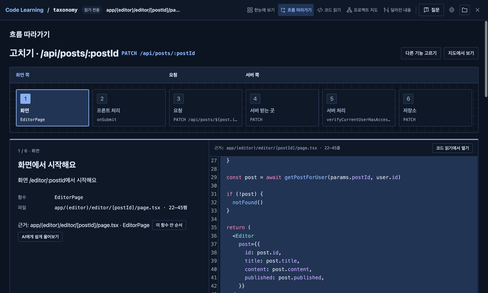
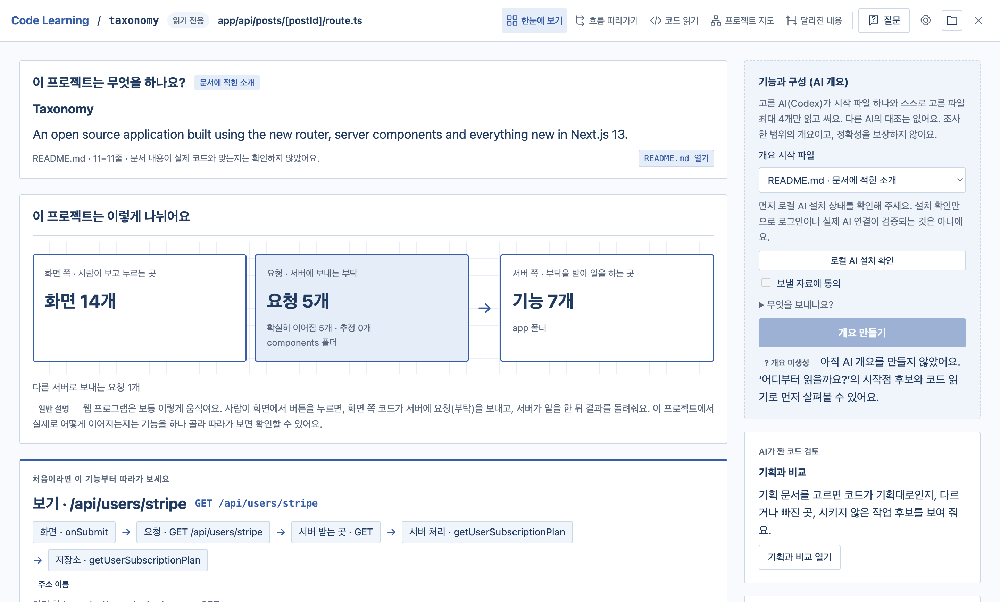
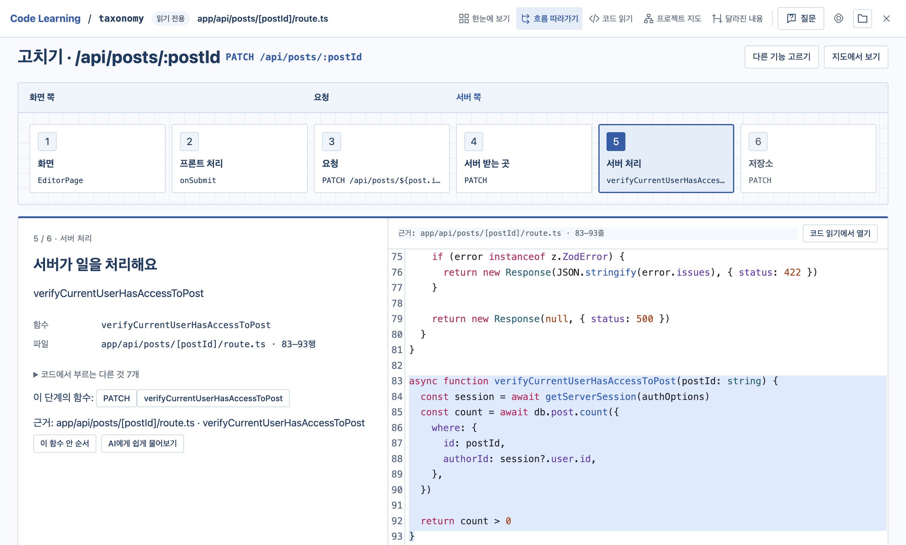
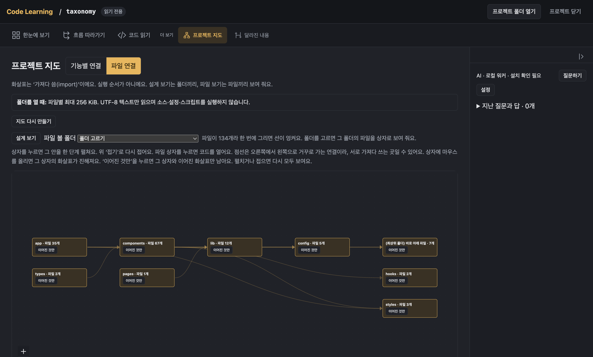
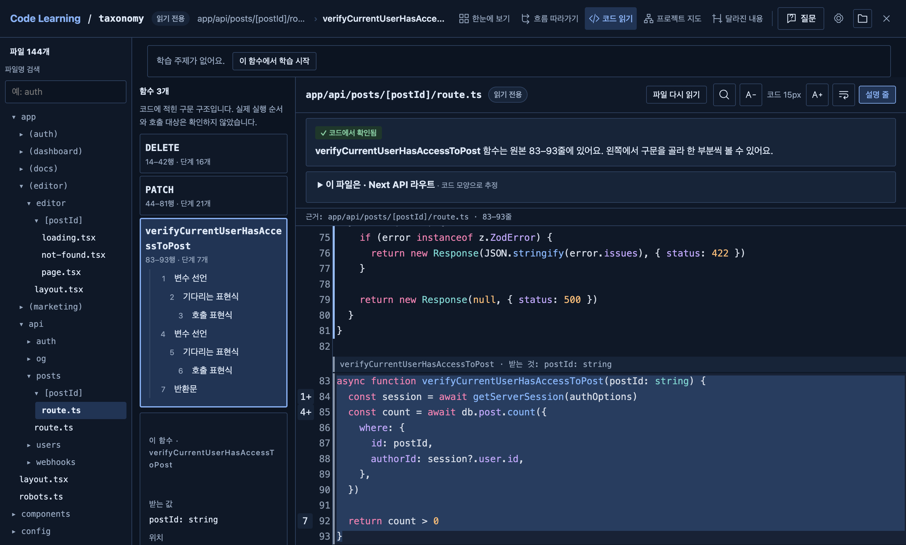

이런 때 씁니다
- AI가 짜 준 코드를 검토할 때
- 새 팀이나 오픈소스 프로젝트의 구조를 파악할 때
- 버튼을 누르면 서버에서 무슨 일이 일어나는지 궁금할 때
한눈에 보기
README 소개와 코드에서 찾은 화면·요청·서버 기능 수를 보여 주고, 처음 따라갈 기능을 추천합니다. README 소개가 실제 코드와 맞는지는 확인하지 않습니다.

기능 흐름 따라가기
화면 → 프론트 처리 → 요청 → 서버 받는 곳 → 서버 처리 → 저장소(DB) 순서로, 기능 하나를 실제 코드와 줄 번호로 따라갑니다. 확실하지 않은 연결은 '추정'으로 표시하고, 찾지 못한 단계는 건너뜁니다.

프로젝트 지도
폴더와 파일 사이의 import 관계를 그림으로 봅니다. 화살표는 실행 순서가 아닙니다.

코드 읽기
파일 트리와 검색으로 파일을 열고, 함수 안의 구문 단계와 해당 줄을 함께 봅니다. 함수를 고르고 '이 함수 흐름으로 보기'를 열면 그 함수가 부르는 것과 부르는 곳, 값이 어디서 오는지, TypeScript 타입을 볼 수 있습니다.

처음 열 때
macOS에서는 Apple 유료 개발자 프로그램의 서명·공증을 받지 않은 앱이라 처음 실행할 때 Apple 경고가 나옵니다.
Windows에서는 코드 서명을 하지 않은 설치 파일이라 SmartScreen의 "Windows의 PC 보호" 경고가 나옵니다.
안전
- 프로젝트 파일은 읽기만 합니다. 프로젝트 파일을 바꾸지 않고, 프로젝트의 코드·설정·스크립트를 실행하지 않습니다.
- AI를 쓰지 않으면 코드는 밖으로 나가지 않습니다. 사용 기록 수집(텔레메트리)도 없습니다.
- AI는 선택 기능입니다. 직접 설치한 AI 프로그램(CLI)인 Codex나 Gemini(Antigravity)를 연결해서 씁니다.
- AI에 보낸 자료는 고른 회사의 약관과 계정 설정에 따라 처리되며 학습에 쓰일 수 있습니다. Gemini는 Google AI Studio API 키로만 연결합니다.